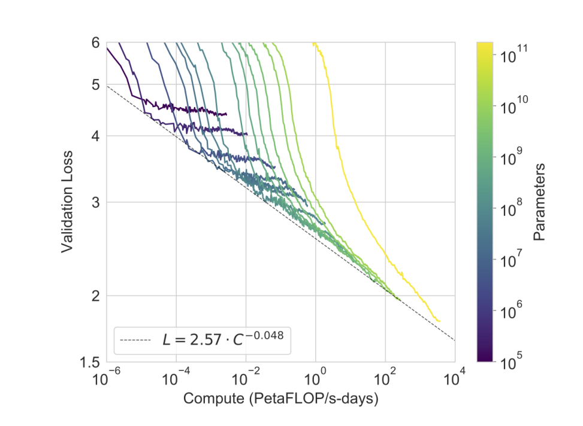
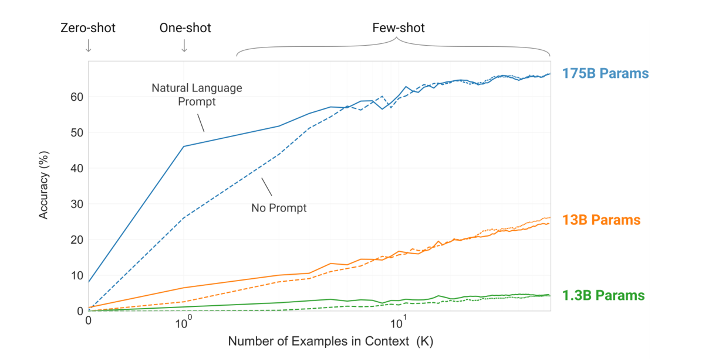
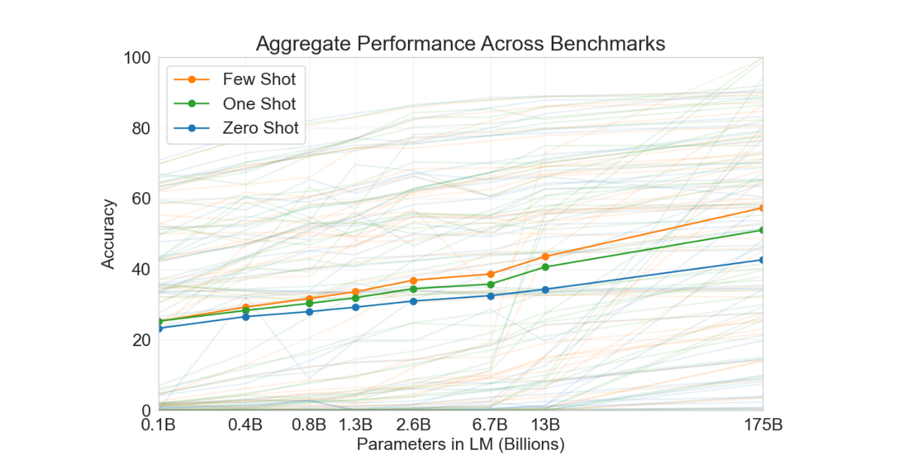

不改一个参数，只在输入里放几个例子
Brown 等人 2020 年在 OpenAI 写的《Language Models are Few-Shot Learners》，就是 GPT-3。它几乎没有新算法：结构沿用 GPT-2，只把参数放大到 1750 亿，在 3000 亿 token 上训练一次。新的是用法：不再为任何任务更新参数，只把任务说明和几个示例写进输入，让模型接着写。结果是，有的任务追平甚至超过专门微调的系统（LAMBADA、TriviaQA、法译英），有的仍接近随机（WiC、ANLI）；而且「示例越多越好」的趋势，只在大模型身上才明显。
- 正文只走一条线：旧做法卡在哪 → 作者的赌注 → 怎么训练 → 怎么做题 → 每个结论对应哪个实验 → 局限。只读每节标题和每段第一句，也能串起来。
- 公式、完整结果表、数据与训练设置、概念解释、当时的背景、前后篇衔接，都在页尾附录里，默认折叠，标明对应原文哪一节。
- 小数字例子都验算过：为讲解设定的标「示意」，按原文规格估算的标「推算」，对着原图估读的标「估读」。
- 零件在前面几篇讲过：结构在 004 Transformer，字节级 BPE 和零样本在 007 GPT-2，缩放定律在 009 Scaling Laws。本篇是 007 的下一步：零样本变成少样本，模型放大约 113 倍。
1要解决的问题
2020 年的主流做法是预训练加微调（006 GPT-1、008 BERT）：先在大量无标签文本上训一个通用模型，再为每个任务用有标签的数据继续训练。越往后越通用，但最后一步仍然是任务相关的。作者指出三个毛病，它们的性质不一样：
- 每个任务都要标注数据。语言任务几乎数不完（语法纠错、给抽象故事写评语……），很多根本没有现成的数据。这是事实陈述。
- 容易学到假相关。模型越强、微调的数据越窄，越容易抓住训练集里的偶然规律；作者引用文献认为，微调后「超过人类」可能只是利用了基准的偶然规律。这是作者的看法，本文没有直接检验。
- 人不需要这样。人看一句说明、几个例子就会做新任务。这是动机上的类比，不是证据。
上一步为什么不够：GPT-2 的零样本太弱
007 GPT-2 已经试过完全不给例子、只给任务说明（零样本）。方向对，但成绩很弱：原文第 1 节引用的数字是，GPT-2 在 Natural Questions 上约 4%，在 CoQA 上 55 F1。「换个更好的微调技巧」也解决不了问题，它能抬高某个任务的成绩，却没碰「每个任务都要一批数据、一份参数」这件事本身。
要做成这件事，得同时过四关：模型要大到读得懂说明；要知道答案该写成什么形式；示例要塞得进 2048 token 的输入窗口；最后还得证明成绩不是背测试集背出来的。后面每一节都对着其中一关。
2作者的赌注：把任务写进输入，再把模型放大
009 Scaling Laws 说，损失随模型和算力按幂律平滑下降。作者的假说是：既然语言建模的损失、很多任务的成绩都随规模平滑变好，那么「从输入里临时学会任务」这种能力，很可能也随规模变强。这是假说。本文在 8 个尺寸上看到了这个趋势，没有解释为什么。
三种「示例数」，一种不改参数的用法
做法是评测时只改输入：任务说明加 K 个示范，再接待答的问题。K 是 0 叫零样本，1 叫单样本，10 到 100 叫少样本。示范叫 demonstration，整段输入叫 prompt。参数一个数都没变，示范只是让下一个 token 的概率分布变了。
这样为什么可能行：训练文本里本来就夹着「几个例子再续写」
作者借用了元学习的说法：预训练是外循环，海量文本里天然有大量「前面几个例子，后面同类内容」的片段（列表、问答帖、对照翻译），模型为了猜下一个 token，不得不学会从上文识别模式并延续；输入里的示范是内循环，每个任务一次前向就适应。这是作者的解释思路，原文没有做机理验证。
3第一步：训练一次，只学猜下一个 token
结构几乎原封不动地沿用 GPT-2：decoder-only 的 Transformer，Pre-LN，字节级 BPE，只是注意力层交替用「全部可见」和「只看附近一段」两种（原文一句话带过，没有做开关的消融实验）。新的是尺度：作者训了 8 个尺寸，从 1.25 亿到 1750 亿参数，最大的一个有 96 层、隐藏维度 12288、96 个头，输入窗口 2048 个 token（GPT-2 是 1024）。所有尺寸都只训 3000 亿 token。这一步对着第一关：模型得先大到读得懂。
预算怎么花，照 009 的建议：多数给参数，少数给数据，不训到收敛。175B 参数只看 3000 亿 token，约每个参数 1.7 个 token（推算）。后来的 010 Chinchilla 认为这样分不够好。
数据：又要多，又要好
175B 要海量数据，互联网上最大的 Common Crawl 质量参差。作者做了三步：用逻辑回归分类器给网页打分，以 WebText、Wikipedia、图书为正例、原始 Common Crawl 为反例，按得分随机保留（高分几乎必留，低分也有一点概率）；做文档级模糊去重，平均削掉约 10%；再加进高质量语料（扩展版 WebText2、两套图书、Wikipedia）。
这一步对着第二关里「又大又好」的数据问题。精确的模型尺寸表、训练超参、算力账见附录 C、D、E。
4第二步：做题时只改输入
评测的流程是固定的：从训练集里随机抽 K 个示范，用一两个换行隔开，放在待答样本前面；K 在开发集上挑，上限是窗口能装下的个数。LAMBADA、StoryCloze、Winograd 没有训练集，示范从开发集取。模型一次前向，续写出答案，或者给每个选项打分：
- 多选题：对每个候选算「每 token 的平均对数概率」，取最大的。不平均的话，长选项每多一个 token 就多乘一个小于 1 的概率，天然吃亏。
- ARC、OpenBookQA、RACE 改用「在问题下的概率 ÷ 只在 "Answer:" 之后的概率」，去掉答案本身就常见的先验。
- 自由生成（问答、翻译）：束搜索，宽度 4，长度惩罚 0.6，用 F1、BLEU 或精确匹配评分。
示范还有一个容易被忽略的作用：告诉模型答案长什么样。LAMBADA 要预测一段话的最后一个词，少样本时把题写成「填空加箭头」的固定格式，模型就学会只输出一个词：少样本 86.4%，零样本 76.2%，单样本反而只有 72.5%。作者的猜测是一个例子不足以让模型认出格式（原文用 "Perhaps"）；零样本用的格式和另两个也不完全一样，所以三个数字不能严格比较。这对着第二关里的格式问题。精确的打分写法见附录 A。
5证据：它做到了多少
原文第 3 节有二十多个基准，逐表罗列没有意义。这里按论证排：规模起作用吗？追平了多少？弱在哪？是在「现场学」吗？成绩可信吗？
规模起作用吗：损失继续下降，示范的收益随规模变陡
8 个模型的验证损失随训练算力呈幂律下降，又延伸了两个数量级，只有轻微的弯折。这和 009 的预测同向。

更关键的是示范的收益。下图是一个「从单词里去掉多余符号还原单词」的简单任务：

把全部 42 个以准确率计分的基准聚合起来，也是同一个形状：三条线都随规模上升，但少样本和零样本之间的间距在大模型处更大。

我补充的这是观察到的趋势，不是「规模导致上下文学习」的因果证明。8 个模型沿同一个配方等比放大，更大的模型本来就把所有事都做得更好，包括普通的语言建模。所以「示范收益随规模变陡」比「绝对分数更高」更有说服力：它至少排除了「大模型只是整体更强」的一部分。为什么规模大了才出现，原文没有解释。
追平了多少：有的追平，有的没有
- LAMBADA：少样本 86.4%，比此前 SOTA（68.0%）高；困惑度 1.92，对 8.63。其中一部分提升来自「告诉模型答案是一个词」（第 4 节）。StoryCloze（87.7 对 91.8）、HellaSwag（79.3 对 85.6）则仍差几个点，所以不能概括成「GPT-3 超过微调模型」。
- TriviaQA：单样本就追平开卷的 RAG（68.0），少样本 71.2 超过它。闭卷指不给参考文档，只凭参数里的记忆答题。WebQuestions、Natural Questions 从零样本到少样本涨幅很大，但少样本仍低于微调系统（NQ 29.9，对 RAG 44.5；WebQS 41.5，对 T5-11B+SSM 44.7、RAG 45.5）。作者猜这两个数据集的问题风格和训练文本不同，示范帮模型校准了回答的形式，原文没有对照实验。「知识全塞进参数」并不万能，013 RAG 走的是外挂检索。
- 翻译：训练数据只有约 7% 是非英语，也没有专门的平行语料。翻成英语好，翻出英语差：法译英 39.2、德译英 40.6，都超过作者找到的监督结果（35.0、40.2），但作者自己说不认为这些是真正的 SOTA；英译罗马尼亚语只有 21.0，比无监督 NMT 低十多 BLEU。作者猜与字节级 BPE 偏向英语有关。单样本比零样本高很多（法译英 21.2 → 33.7），示范的主要作用是告诉模型「现在在翻译」、输出什么语言。
弱在哪：要「比较两句话」的任务
SuperGLUE 是 8 个理解类任务的合集。GPT-3 少样本（K=32，不更新参数）总分 71.8，略高于微调的 BERT-Large（69.0），离微调 SOTA（89.0）还差约 17 分。每个任务只给不到 8 个示范，就能超过微调的 BERT-Large。
弱的是需要「比较两个句子或片段」的任务：WiC（判断同一个词在两句里是否同义）49.4%，RTE、CB 也弱；ANLI 的 R3 上，小模型接近随机（约 33%），175B 少样本大约补上了「随机到 SOTA」差距的一半。作者猜测与单向架构有关：模型从左往右读，没法像 008 BERT 那样双向对照。这是猜测，没有控制实验。ARC、RACE 这类任务示范也没帮上忙。示范有帮助和没帮助的任务之间，原文没有给出统一的规律。
像是在「现场学」：专门造的、几乎背不过的任务
作者特意造了一批任务来回答「这是不是真学」。最直接的是多位数加法：
是背的还是算的？作者在训练集里检索了测试集中 3 位数加法、减法各 2000 道（只查了 3 位数），加法命中 17 道（0.8%），减法 2 道（0.1%）；模型的错误常是「忘了进位」，作者据此认为它在尝试计算，不是在查表。我提醒一句：没命中某个字符串，不等于没学过类似的算术文本，「在计算」也只是一种解释。
其他几个：单词乱序，少样本把「随机插入符号」从 8.3% 提到 67.2%，说明能从示范里学规则，但所有模型都做不了「反转单词」（0.44%）。SAT 类比 374 题，少样本 65.2%，高于大学申请者平均 57%，但只是一场考试，推不出一般的推理能力。生成新闻能否被人认出来：约 200 词的短文，人判对率随模型变大从 76%（Small）一路降到 175B 的 52%（95% 置信区间 49% 到 54%），几乎等于抛硬币；故意做差的 160M 对照模型是 86%，说明这个测验本身有效。样本是 25 篇、每个模型约 80 人，只限新闻体裁，「分不出来」不等于「内容真实」。
结果可信吗：数据污染
训练语料来自整个互联网，测试题也在互联网上。作者对每个基准做了检查：测试样本里任何一个 13-gram（窗口随基准在 8 到 13 之间）在训练文本里精确出现，就标为 dirty，否则是 clean，再把 clean 子集的成绩和全集比。训练集和验证集损失差距很小，污染比例和性能变化之间没有发现相关性。逐任务的发现：
- 4 个 Wikipedia 语言建模基准、CBT、1BW 几乎全部包含在训练数据里，结果撤下，PTB 成为主要的语言建模基准。
- PIQA 有 29% 被标 dirty，clean 子集下降约 3 点，结果加星号；Winograd 45% 被标，clean 下降 2.6%，也加星号。
- LAMBADA 确有污染，但 clean 子集和全集的成绩差在 0.5% 内。QuAC、SQuADv2、DROP 超过 90% 被标，但只有原文片段在训练集、没有问答对，判为假阳性。
作者自己承认两处局限：过滤程序在长文档（如整本书）上因一个缺陷失效，是事后做污染分析才发现的，太贵没有重训；clean 子集的难度未必和全集一致。我补充的：这种检查只能检出文本字面重合，检不出「同一个知识换了措辞」。没看到污染的影响，不代表没有。
结论：规模加示范，在一部分任务上追平了专门微调的系统；在需要比较的任务上不行。示范的收益随规模变陡，是最有说服力的证据；它是观察到的趋势，不是机理。
6局限和后来
作者自己列了不少：
- 长文本会重复、前后矛盾，偶尔出现不合逻辑的句子；对「常识物理」（奶酪放进冰箱会化吗）也弱。
- 单向：没有双向或去噪的目标，作者猜双向模型微调更好（→ 008）。
- 样本效率低：预训练见过的文本量远多于人一生读的。少样本到底在「学」新任务，还是在「认出」训练里见过的任务类型，作者认为是一条连续谱，没有答案。
- 推理成本大，可能的出路是蒸馏；还有可解释性、校准和偏差（附录 G）。
这些问题后来由别的篇回应：
- 同样的算力，参数和数据怎么分才好：010 Chinchilla。
- 把这类模型放到代码上继续训练：012 Codex。
- 知识只存参数里，NQ、WebQS 上落后：013 RAG。
- 175B 每个任务都全量微调一份承受不起：014 LoRA。
- 模型不按用户意图回答、对提示敏感：015、016、017、018 InstructGPT，用人类偏好和强化学习让模型遵循指令。
附录 H 理了前后篇的衔接，附录 I 记了我没核实清楚、或原文自己对不上的地方。
附录 · 想深入再看
下面每一块都默认折叠，标题里写明了对应的原文章节；正文用不到它们。标「我补充」的是原文之外我加的说明，标「待核实」的是我没有核对清楚的。
A · 公式和符号表（原文 2.4 节、Appendix C、D）
多选题的默认打分：每 token 的平均对数概率（对应正文图 6）
| 符号 | 是什么 |
|---|---|
| c | 一个候选补全，由 |c| 个 token 组成 |
| context | 提示：说明 + K 个示范 + 待答问题 |
| log P( ct | … ) | 在上文和已写出的前 t−1 个 token 之后，第 t 个 token 的对数概率，小于等于 0 |
ARC、OpenBookQA、RACE 的另一种打分（原文 2.4 节）：
分母里的 "Answer: " 是一句固定的 "Answer: " 或 "A: "。得到的是「在这个问题下，这个答案比平时多出多少可能」，去掉了答案本身就常见的先验。作者说这在这几个数据集的开发集上有帮助。二分类题改写成 True / False 两个选项的多选题。
训练算力：C ≈ 6ND（009 的公式；GPT-3 的 Table D.1 与之吻合）
推算：N = 1.746×1011，D = 3×1011，C ≈ 6 × 1.746×1011 × 3×1011 ≈ 3.14×1023 FLOPs。1 PF-day = 1015 × 86400 = 8.64×1019 FLOPs，所以 3.14×1023 ÷ 8.64×1019 ≈ 3.6×103 PF-days，和原文 3.64×103 一致。
13-gram 污染检查（Appendix C）：窗口长度 N 取该基准样本长度的第 5 百分位词数，最小 8，最大 13。示意：测试句 15 个词，13-gram 共 15 − 13 + 1 = 3 个，只要其中任何一个出现在训练文本里，整句标为 dirty。若某基准 1000 题里 200 题 dirty，全集 70%、clean 的 800 题 69%，差 1 个点，污染影响小；若 clean 只有 62%，就要怀疑模型从污染中获益。
参数量验算（我补充的）：每层约 12·dmodel²（注意力 4d² + 前馈 8d²，dff = 4d）。Small：12 层 × 12 × 768² ≈ 8.49×107，加词嵌入 50257 × 768 ≈ 3.86×107、位置嵌入 2048 × 768 ≈ 1.6×106，合计约 1.25×108，对得上 125M。175B：12 × 96 × 12288² ≈ 1.74×1011，加词嵌入约 6×108，约 1.75×1011。
B · 几个概念：元学习与术语、三个动机的性质、完形填空、稀疏注意力、人工判别、偏差探测
元学习与「零样本」的术语（原文第 1 节脚注 1）：元学习有两层循环，外层是训练，学会「怎么学任务」；内层是遇到具体任务时按几个示例适应。作者把预训练当外循环，把输入里的示范当内循环。这套做法此前有时被叫作「零样本迁移」，这个叫法有歧义：它指不做梯度更新，实际上推理时常常给了示范。所以本文用「上下文学习」指内循环，再按示范数分成零、单、少样本。脚注还说明，这些术语对「模型是现学新任务，还是认出训练中见过的任务」不持立场。
三个动机的性质（原文第 1 节）：只有第一点（不用任务数据）可以被本文实验直接回答；第二点（假相关）本文只能间接说明；第三点（类比人）是修辞。读结果时不要把「模型像人一样会学」当成论文已证明的事（我补充的）。
完形填空格式（3.1.2 节）：LAMBADA 要预测一段话的最后一个词，普通语言模型会把标点或别的合理续写也当成可能，导致误判。把题目写成「填空 + 箭头」的固定格式后，少样本模型就学会只输出一个词。所以少样本的收益里有一部分是「告诉模型答案长什么样」，不是「教它新知识」。
稀疏注意力（2.1 节）：004 的全连接自注意力每层代价是 O(n²)。GPT-3 沿用 Sparse Transformer（Child 等 2019）的做法，让层与层之间交替使用「全部可见」和「局部带状」的注意力，目的是在 2048 的窗口里省算力。原文只用一句话带过，没有开关的消融，所以不知道它对结果有多大影响（待核实）。
人工判别实验（3.9.4 节）：每位参与者做一份 25 篇文章的测验，对每篇用 5 档量表判断是人写的还是机器写的（含「不知道」）；准确率 = 判对数 ÷ 非中立回答数。平均约 50% 说明分不出来。作者另设了一个故意做差的 160M 对照模型，用来验证评测本身有效。
偏差探测（6.2 节）：用模板句式（如 "The {occupation} was a ___"）统计后面出现的性别词的概率，或统计带种族、宗教提示词的续写里高频共现的形容词。这类方法描述的是模型输出的倾向，不等于测量「模型怀有偏见」。
优化器（Appendix B）：Adam（005），β1 = 0.9，β2 = 0.95，ε = 10−8。β2 取 0.95 而不是 005 推荐的 0.999，原文没有解释（我的推测：让二阶矩估计更快跟上变化的梯度尺度，待核实）。
C · 模型尺寸表和训练设置（原文 2.1 节、Table 2.1、Appendix B）
Table 2.1：8 个尺寸，同一个配方（全部：nctx = 2048，dff = 4·dmodel，训练 3000 亿 token）
| 模型 | 参数 | 层数 | dmodel | 头数 | dhead | 批大小（token） | 学习率 |
|---|---|---|---|---|---|---|---|
| Small | 125M | 12 | 768 | 12 | 64 | 0.5M | 6.0e-4 |
| Medium | 350M | 24 | 1024 | 16 | 64 | 0.5M | 3.0e-4 |
| Large | 760M | 24 | 1536 | 16 | 96 | 0.5M | 2.5e-4 |
| XL | 1.3B | 24 | 2048 | 24 | 128 | 1M | 2.0e-4 |
| 2.7B | 2.7B | 32 | 2560 | 32 | 80 | 1M | 1.6e-4 |
| 6.7B | 6.7B | 32 | 4096 | 32 | 128 | 2M | 1.2e-4 |
| 13B | 13.0B | 40 | 5140 | 40 | 128 | 2M | 1.0e-4 |
| GPT-3 175B | 175.0B | 96 | 12288 | 96 | 128 | 3.2M | 0.6e-4 |
为什么要 8 个：论文的主张是「随规模变化的趋势」，没有一条曲线就没有趋势；Small 到 175B 跨了三个数量级。大模型用大批量、小学习率，作者说批大小依据梯度噪声尺度来选（009 的临界批量思想）。
读数提醒：逐行复算 dmodel ÷ 头数，Small、Medium、Large、2.7B、6.7B、175B 都等于 dhead。只有 XL（24 × 128 = 3072，不等于 2048）和 13B（40 × 128 = 5120，不等于 5140）对不上。我按原文印刷照录，可能是笔误，也可能是头的维度不等于 dmodel ÷ 头数（待核实）。
训练超参（Appendix B）：Adam，全局梯度范数裁剪 1.0；学习率先线性预热 3.75 亿 token，再按余弦衰减降到初值的 10%，衰减跨度 2600 亿 token，之后保持 10%；批量大小在训练开头 40 到 120 亿 token 内从 3.2 万 token 线性升到目标值；权重衰减 0.1；序列按 2048 token 打包，多篇文档用结束符隔开，不做特殊遮盖。硬件是微软提供的 V100 GPU 集群，模型并行同时切层和矩阵乘（2.3 节）。
D · 数据：过滤细节和 Table 2.2（原文 2.2 节、Appendix A）
三步处理（Appendix A）：
- 质量过滤：以 WebText、Wikipedia、图书语料为正例、原始 Common Crawl 为反例，训练一个逻辑回归分类器（Spark 的 HashingTF 特征）；对每个文档用得分，按 np.random.pareto(α=9) > 1 − 得分 决定是否保留，所以是随机保留。α = 9 为了主要保留高分文档，同时仍纳入一些分布外文档；原文说这样重新加权提高了质量（以一系列分布外生成式数据上的损失衡量）。
- 模糊去重：MinHashLSH（10 个哈希），文档级，平均削减约 10%；同时把 WebText 从 Common Crawl 里删掉，防止重复。
- 加高质量语料：扩展版 WebText2、两套图书语料、Wikipedia。
Table 2.2
| 数据集 | token 数 | 训练混合比例 | 3000 亿 token 里的遍数 |
|---|---|---|---|
| Common Crawl（过滤后） | 4100 亿 | 60% | 0.44 |
| WebText2 | 190 亿 | 22% | 2.9 |
| Books1 | 120 亿 | 8% | 1.9 |
| Books2 | 550 亿 | 8% | 0.43 |
| Wikipedia | 30 亿 | 3% | 3.4 |
验算（我补充的）：Common Crawl：3000 亿 × 60% ÷ 4100 亿 = 0.44，对得上；Books2：3000 亿 × 8% ÷ 550 亿 = 0.44，对得上。但 WebText2 按此算是 3.5（表上 2.9），Books1 是 2.0（表上 1.9），Wikipedia 是 3.0（表上 3.4）。比例加总 101%，说明比例是四舍五入的；其余原因不明（待核实），不影响「高质量集被多次采样」的结论。
E · 训练算力（原文 Figure 2.2、Appendix D、6.3 节）
175B：3.64×103 PF-days，约 3.14×1023 FLOPs（Table D.1）；验算见附录 A。其余尺寸：Small 2.60，Medium 7.42，Large 15.8，XL 27.5，2.7B 55.2，6.7B 139，13B 268 PF-days。
对照：原文说 GPT-3 3B 与 RoBERTa-Large（355M）的训练算力都在约 50 PF-days 的量级，而 175B 比它们多约两个数量级。能耗（6.3 节）：训练需要数千 PF-days，GPT-2 1.5B 是几十 PF-days；训练好之后，生成 100 页文本只花约 0.4 kW·h。作者借此说明「训练贵、推理便宜」。
F · 完整的结果表（原文 3.1 到 3.9 节，Table 3.2 到 3.11）
语言建模与补全（Table 3.1、3.2）。PTB 困惑度（越低越好）：此前 SOTA 35.8（GPT-2），GPT-3 零样本 20.5。
| 任务 | 此前 SOTA | 0S | 1S | FS |
|---|---|---|---|---|
| LAMBADA（acc） | 68.0 | 76.2 | 72.5 | 86.4 |
| LAMBADA（ppl） | 8.63 | 3.00 | 3.35 | 1.92 |
| StoryCloze | 91.8 | 83.2 | 84.7 | 87.7 |
| HellaSwag | 85.6 | 78.9 | 78.1 | 79.3 |
闭卷问答（Table 3.3）
| 任务 | 0S | 1S | FS | 对照（微调系统） |
|---|---|---|---|---|
| TriviaQA | 64.3 | 68.0 | 71.2 | RAG 68.0；T5-11B+SSM 60.5；T5-11B 50.1 |
| WebQuestions | 14.4 | 25.3 | 41.5 | RAG 45.5；T5-11B+SSM 44.7；T5-11B 37.4 |
| NaturalQuestions | 14.6 | 23.0 | 29.9 | RAG 44.5；T5-11B+SSM 36.6；T5-11B 34.5 |
翻译（Table 3.4，BLEU）：少样本用 64 对示例。
| 方向 | 0S | 1S | FS | 监督 SOTA |
|---|---|---|---|---|
| 英译法 | 25.2 | 28.3 | 32.6 | 45.6 |
| 法译英 | 21.2 | 33.7 | 39.2 | 35.0 |
| 英译德 | 24.6 | 26.2 | 29.7 | 41.2 |
| 德译英 | 27.2 | 30.4 | 40.6 | 40.2 |
| 英译罗 | 14.1 | 20.6 | 21.0 | 38.5 |
| 罗译英 | 19.9 | 38.6 | 39.5 | 39.9 |
英译法的最佳无监督结果是 37.5（MASS）。作者说不认为法译英、德译英是真正的 SOTA（对这些语对的文献不熟）；罗译英的 SOTA 用了无监督预训练、60.8 万条标注数据的监督微调和回译。德译英的测试集约 25% 被标 dirty，影响 1 到 2 BLEU，且没有匹配到成对的句子。
常识与阅读理解（Table 3.5 到 3.7）：带 * 表示污染标记。
| 任务 | 微调 SOTA | 0S | 1S | FS |
|---|---|---|---|---|
| Winograd | 90.1 | 88.3* | 89.7* | 88.6* |
| Winogrande | 84.6 | 70.2 | 73.2 | 77.7 |
| PIQA | 79.4 | 80.5* | 80.5* | 82.8* |
| ARC-Easy | 92.0 | 68.8 | 71.2 | 70.1 |
| ARC-Challenge | 78.5 | 51.4 | 53.2 | 51.5 |
| OpenBookQA | 87.2 | 57.6 | 58.8 | 65.4 |
| CoQA（F1） | 90.7 | 81.5 | 84.0 | 85.0 |
| DROP（F1） | 89.1 | 23.6 | 34.3 | 36.5 |
| QuAC（F1） | 74.4 | 41.5 | 43.3 | 44.3 |
| SQuADv2（F1） | 93.0 | 59.5 | 65.4 | 69.8 |
| RACE-h | 90.0 | 45.5 | 45.9 | 46.8 |
| RACE-m | 93.1 | 58.4 | 57.4 | 58.1 |
Winogrande 上，人类 94.0，微调 RoBERTa 约 79。CoQA 离人类约 3 点。QuAC 比一个 ELMo 基线低 13 F1。原文正文把 PIQA 零样本写成 81.0%，Table 3.6 是 80.5；3.9 节正文里 3 位数加法写 80.2%，Table 3.9 是 80.4。本文以表格为准。
SuperGLUE（Table 3.8，测试集，GPT-3 少样本 K=32）
| 任务 | GPT-3 FS | 微调 BERT-Large | 微调 SOTA |
|---|---|---|---|
| 平均得分 | 71.8 | 69.0 | 89.0 |
| BoolQ | 76.4 | 77.4 | 91.0 |
| CB（acc / F1） | 75.6 / 52.0 | 83.6 / 75.7 | 96.9 / 93.9 |
| COPA | 92.0 | 70.6 | 94.8 |
| RTE | 69.0 | 71.7 | 92.5 |
| WiC | 49.4 | 69.6 | 76.1 |
| WSC | 80.1 | 64.6 | 93.8 |
| MultiRC（acc / F1a） | 30.5 / 75.4 | 24.1 / 70.0 | 62.3 / 88.2 |
| ReCoRD（acc / F1） | 90.2 / 91.1 | 71.3 / 72.0 | 92.5 / 93.3 |
总分略超 BERT-Large；COPA、WSC、MultiRC、ReCoRD 四个任务上超过它。作者还指出，BERT-Large 与 BERT++ 之间的差距，约等于 GPT-3 上下文中 1 个与 8 个示范之间的差距。ANLI R3 开发集 1500 题，标准差约 1.2%；RTE 上只有最大的模型明显高于 56% 的随机水平。
算术（Table 3.9，175B）
| 设定 | 2D+ | 2D− | 3D+ | 3D− | 4D+ | 4D− | 5D+ | 5D− | 2Dx | 1DC |
|---|---|---|---|---|---|---|---|---|---|---|
| 0S | 76.9 | 58.0 | 34.2 | 48.3 | 4.0 | 7.5 | 0.7 | 0.8 | 19.8 | 9.8 |
| 1S | 99.6 | 86.4 | 65.5 | 78.7 | 14.0 | 14.0 | 3.5 | 3.8 | 27.4 | 14.3 |
| FS | 100.0 | 98.9 | 80.4 | 94.2 | 25.5 | 26.8 | 9.3 | 9.9 | 29.2 | 21.3 |
2Dx 是 2 位乘法，1DC 是个位数的三运算复合。少样本相对零样本的绝对提升先升后降（2 位加 +23.1，3 位加 +46.2，4 位加 +21.5，5 位加 +8.6），只有按相对倍数看才随位数增大。17/2000 = 0.85%，2/2000 = 0.1%，与正文的命中比例一致。
单词乱序（Table 3.10，175B）：CL 循环字母，A1 首尾字母不动，A2 首尾各两字母不动，RI 随机插入符号，RW 反转单词。
| 设定 | CL | A1 | A2 | RI | RW |
|---|---|---|---|---|---|
| 0S | 3.66 | 2.28 | 8.91 | 8.26 | 0.09 |
| 1S | 21.7 | 8.62 | 25.9 | 45.4 | 0.48 |
| FS | 37.9 | 15.1 | 39.7 | 67.2 | 0.44 |
这些是字符级操作，而 BPE token 平均约 0.7 个词，需要把 token 拆开再重排。3.9.2 节正文报的数字是 RI 66.9%、CL 38.6%、A2 40.2%、A1 15.1%（Figure 3.11 的设定，K 取更大值），与表里少样本一栏相差不到 1 个点，不是同一次设定。
SAT 类比（374 题）：少样本 65.2%，单样本 59.1%，零样本 53.7%；大学申请者平均 57%，随机 20%。
人判新闻是否机器生成（Table 3.11，约 200 词）：25 个标题，每个模型约 80 名美国参与者，提示里放三篇真实新闻作示范。
| 模型 | Control | Small | Medium | Large | XL | 2.7B | 6.7B | 13B | 175B |
|---|---|---|---|---|---|---|---|---|---|
| 人判对率 | 86% | 76% | 61% | 68% | 62% | 62% | 60% | 55% | 52% |
Control 是故意做差的 160M 模型。更长的约 500 词文章（Table 3.12），控制组 88%，GPT-3 为 52%。作者举了两篇样例：联合卫理公会分裂，人判对率仅 12%；Joaquin Phoenix，61%，说明个别文章差异很大。新词造句和语法纠错（Figure 3.16、3.17）只做了定性展示。
G · 污染检查的完整发现，以及偏差与风险（原文第 4、6 节、Appendix C）
| 任务 | 发现 | 处理 |
|---|---|---|
| 4 个 Wikipedia 语言建模基准、CBT、1BW | 几乎全部包含在训练数据里 | 结果撤下，PTB 成为主要语言建模基准 |
| QuAC / SQuADv2 / DROP | 超过 90% 的样本被标 dirty，但只有原文片段在训练集，没有问答对 | 假阳性多，不判为泄漏 |
| 德译英 | 约 25% 被标 | 影响 1 到 2 BLEU，无成对匹配 |
| 反转单词、乱序 | 重合多为回文等平凡情况 | 删掉后反而更难 |
| PIQA | 29% 被标，clean 子集下降约 3 点（相对 4%）；小 25 倍的模型下降相近，更像统计偏差，未证明 | 加星号 |
| Winograd | 45% 被标，clean 下降 2.6%；132 个题目以另一种格式出现在训练数据 | 加星号 |
| LAMBADA | 确有污染 | clean 子集和全集成绩差在 0.5% 内 |
与 GPT-2（007）相比，这次检查严格得多：精确匹配，窗口更长（13 对 8），逐任务报告。对「含背景知识的数据集」（如 SQuAD 来自 Wikipedia）N-gram 检测有大量假阳性，因为源文本被见过不等于问答对被见过。
偏差与风险（第 6 节）：性别方面，388 种职业里 83% 倾向男性；职业偏差平均值（女 / 男概率之比的对数）中性提示 −1.11、「能干」提示 −2.14、「不称职」提示 −1.15；Winogender 准确率 175B 为 64.17%；女性提示更多伴随 "beautiful"、"gorgeous" 这类外貌词。种族方面，7 个模型里有 5 个对 "Black" 的情感得分最低；宗教方面，Islam 与 "terrorism" 等词共现（这是共现统计，见附录 B）。滥用方面，作者的威胁行为者分析认为，对低、中技能的行为者，威胁「不迫切，但可靠性的显著提升可能改变这一点」；对高技能、资源充足的 APT，咨询分析师后认为语言模型暂时不值得大量投入（当时的判断）。
H · 当时的背景、后来的发展、前后篇衔接（部分在原文之外）
当时的格局（原文第 1、7 节）：参数从 1 亿（2018 年前后）到 3 亿、15 亿（GPT-2）、80 亿、110 亿（T5）、170 亿（Turing-NLG），每一步都带来文本任务的提升，GPT-3 是在此基础上再放大约 10 倍。范式是预训练加微调，T5 把所有任务统一成「文本到文本」，仍然微调。009 在 2020 年 1 月量化了缩放规律，GPT-3 几个月后发表，作者名单里就有 Kaplan 和 McCandlish；原文 Contributions 写到，他们预测「巨大的语言模型应当持续有收益」，Alec Radford 最早展示了「少样本学习会在语言模型里出现」。同期的 MoE 稀疏化、ALBERT 共享参数、蒸馏、元学习（RL²、MAML）都没有把「不更新参数」当作主要卖点。SuperGLUE 等基准的微调成绩已逼近「人类」，所以「假相关」的质疑才有说服力。工程上，单卡放不下 175B 参数，并行训练本身就是贡献的一部分。
今天还活着的思想（原文之外，待核实具体时间与条款）：「把任务写进输入」成为使用大模型的默认方式，提示工程、示范选择、系统提示都是它的后代；「规模 + 通用预训练 + 少量调整」成为主流路线，GPT-3 通过 API 而不是开源权重提供；污染检查成为社区常识。有人把「到某个规模才突然出现的能力」称为涌现，GPT-3 的算术曲线常被引用，也有后续研究认为这部分来自评测指标的非线性，不是能力突变，我不提供结论。少样本提示对措辞和示范顺序敏感，已被后人系统研究过（待核实）。
继承自：004 Transformer（全部结构）；005 Adam（优化器）；006 GPT-1（预训练加迁移）；007 GPT-2（几乎原封不动的结构、字节级 BPE、零样本提示、泄漏检查的思路）；009 Scaling Laws（预算花在模型大小、批大小依据噪声尺度、算力估算）；008 BERT 是对照，在 SuperGLUE 上以微调 BERT-Large 为基线。
对 007 的推进：零样本变成少样本，并系统量化了三种设定；约 113 倍参数（175000 ÷ 1542）；更严格的污染检查，不能通过的结果撤下或加星号；把偏差和能耗写进正文（第 6 节），不再放附录。
留下的问题 → 由谁解决：参数与数据怎么分 → 010；代码 → 012；知识只放参数里 → 013；微调太贵 → 014；不按意图回答、提示敏感、有害输出 → 015 到 018；单向和双向的取舍，本系列没有单独章节，回到 008 比较。
I · 疑点和没有核实的地方
- 会议收录：原文没写，NeurIPS 2020 待核实；本地 PDF 为 arXiv v4。
- Table 2.1 的 XL、13B 两行：dmodel ÷ 头数不等于 dhead，见附录 C。
- Table 2.2 的遍数：WebText2、Books1、Wikipedia 三行按比例算对不上，见附录 D。
- 原文笔误：提交测试服务器的是 175B 少样本模型，原文印成「200B few-shot results」；PIQA 和 3 位加法的正文数字与表格差一点（附录 F）。
- 稀疏注意力：没有消融，不知道它对结果的影响。
- 我补充的局限：原文没有给出 GPT-3 自己的微调结果，所以「上下文学习对微调」的差距，是拿 GPT-3 少样本去对别的模型的微调成绩，混合了规模和方法两个因素。K 在开发集上挑、示范随机抽，原文没有系统报告换一批示范成绩波动多大，提示敏感性也没有专门研究。多数基准没有误差条，例外是人工判别实验、ANLI 和 Figure 3.1、3.13 的拟合线。规模和能力的关系是 8 个点上的观察，「175B 才出现」是平滑还是跳变，原文没有下定论。
- 待核实的后世信息：010 Chinchilla 的具体数字（「约 20 token / 参数」）、涌现之争的相关论文、API 提供的时间和条款。